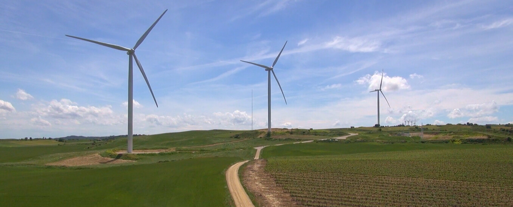
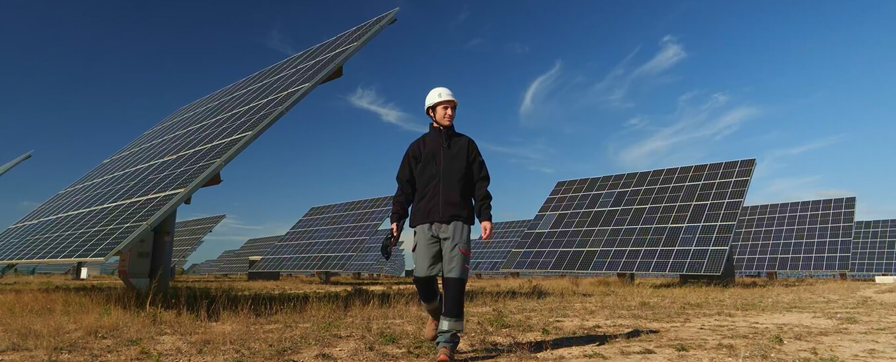
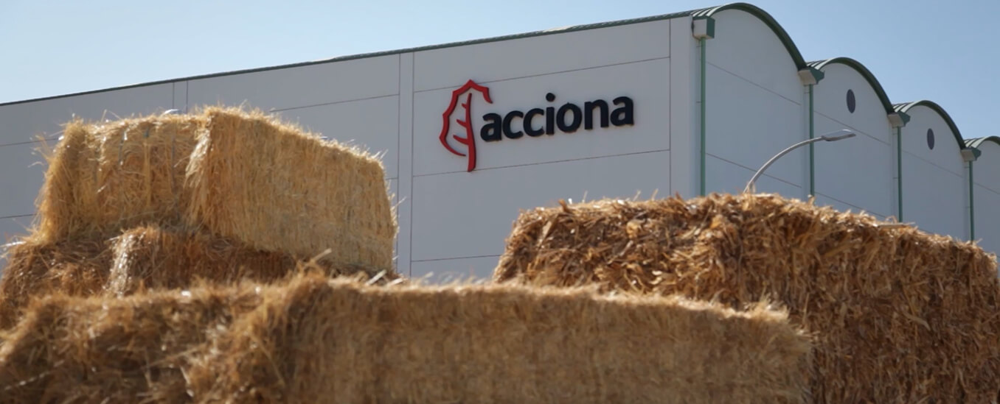

INTEGRAR SOSTENIBILIDAD Y FINANZAS ES UNA ESTRATEGIA EFECTIVA
ACCIONA Energía, con más de 30 años de experiencia en energías renovables, ha demostrado que apostar por un modelo 100% renovable puede ser rentable y sostenible en el tiempo
La descarbonización está en plena aceleración, impulsada por factores económicos, tecnológicos, geopolíticos y regulatorios. En este proceso, las empresas juegan un papel decisivo como agentes de cambio hacia un modelo energético más sostenible.
Uno de los principales motores del cambio reside en que las energías renovables son actualmente la forma más eficiente y competitiva de producir electricidad. El coste de generación ha disminuido significativamente, situándose por debajo de las fuentes fósiles, lo que convierte la transición energética no solo en una necesidad ambiental, sino también en una decisión provechosa desde el punto de vista económico.
La sostenibilidad no puede ser una capa superficial que se pone por encima de las operaciones, sino que ha de estar integrada en la estrategia de las compañías
En ACCIONA Energía, la descarbonización es un modelo de negocio en sí mismo: desde que la compañía empezó hace más de 30 años con su primer parque eólico en Navarra, únicamente ha desarrollado energías renovables y soluciones para descarbonizar la actividad de sus clientes.
Como explica Mariola Domenech, directora de sostenibilidad en ACCIONA Energía, “este modelo ha demostrado ser rentable y sostenido en el tiempo por diversos factores: una mayor resiliencia del negocio, menor exposición a la volatilidad de los combustibles fósiles y a cambios regulatorios, además de ofrecer un amplio abanico de soluciones integrales que acompañan las estrategias de descarbonización de las compañías”. Todo ello aporta un valor diferencial para cualquier empresa que quiera avanzar hacia un modelo de negocio descarbonizado.
El compromiso con la sostenibilidad también se refleja en la gobernanza y en la toma de decisiones internas. “En cualquier decisión de inversión siempre se considera cómo impacta en el modelo sostenible de la compañía”, asegura Mariola Domenech. De este modo, ACCIONA Energía integra criterios ambientales, sociales y de gobernanza (ESG) en sus inversiones, cuenta con estructuras de supervisión desde el consejo de administración y vincula los objetivos de sostenibilidad a la remuneración de sus empleados. Además, sus metas están alineadas con la ciencia, incluyendo objetivos climáticos y de biodiversidad.
Otro aspecto en el que la compañía pone el acento es en garantizar la credibilidad de sus compromisos ambientales. Para ello, según Domenech, “resulta fundamental que la sostenibilidad no sea una capa superficial que se pone encima de las operaciones, sino que esté integrada en la propia estrategia de las compañías”.
También debe haber una asignación de recursos real para el cumplimiento de esa estrategia, un modelo de gobernanza que articule tanto los objetivos como la implementación de la estrategia y que supervise y monitorice que se estén cumpliendo. Además, hay que ir más allá de publicar reportes de sostenibilidad, y detallar cómo han implantado estrategias para cubrirlos y cuál ha sido el grado de cumplimiento.
Claves para que los compromisos de sostenibilidad de una empresa sean creíbles
Integrar plenamente los planes de sostenibilidad en la estrategia global
Marcar unos objetivos claros y alineados con los marcos internacionales y la ciencia
Asignar recursos para el cumplimiento de las actuaciones de sostenibilidad
Establecer un modelo de gobernanza ágil para monitorizar la estrategia
Transparentar las acciones de sostenibilidad ante el público de forma completa
Transformar la cadena de suministro
ACCIONA Energía acompaña a su cadena de valor en su propia estrategia de descarbonización y, al mismo tiempo, asegura que sus estándares de sostenibilidad sean también respetados dentro de la cadena de suministro.
“Trabajamos de manera conjunta con los proveedores, ayudándoles a definir objetivos de descarbonización y de circularidad que, además, ayudan a cumplir nuestra propia estrategia dentro de la compañía y a ellos les ayuda a mejorar sus prácticas sostenibles”, sostiene Mariola Domenech, quien detalla que “tenemos proveedores muy avanzados en materia de sostenibilidad con los que es más fácil trabajar y proveedores más pequeños con menos recursos para los que resulta complicado”.

Por ello, la compañía ayuda a las empresas de menor tamaño a fijar su propia estrategia y desarrollar sus propios objetivos de forma transparente, monitorizando y siguiendo los avances que van consiguiendo, además de plantearles iniciativas o áreas de mejora para trabajar conjuntamente.

La relevancia del impacto social
En 2025, la compañía desarrolló 123 proyectos de impacto social en 19 países con más de 300.000 personas beneficiadas. Unas cifras que refrendan su firme compromiso en generar el mayor impacto positivo posible en las comunidades en las que desarrolla sus proyectos, no únicamente mediante la generación de energía limpia, sino dejando un legado valioso en los entornos en los que opera.
Así, hace más de una década ACCIONA Energía implantó un procedimiento que empieza con un diálogo transparente con la comunidad, informando del proyecto que se va a desarrollar, recogiendo sus necesidades y expectativas y desarrollando conjuntamente un plan de gestión social con un presupuesto asignado.
A partir de ahí, se despliegan una serie de iniciativas que generan oportunidades para la comunidad, que pueden orientarse a empleo, desarrollo de industrias locales, formación y capacitación de trabajadores o promoción de la salud, entre otros.

Los grandes retos de la transición energética
En los últimos años se ha avanzado mucho en la descarbonización, pero todavía quedan desafíos importantes en los que seguir trabajando. Entre ellos, destaca la electrificación de la demanda, especialmente en sectores industriales difíciles de descarbonizar que aún dependen de combustibles fósiles. En este sentido, Mariola Domenech considera que “se debe trabajar en políticas públicas que den visibilidad y marcos regulatorios estables para que este proceso de transición se desarrolle y permita escalar tecnologías emergentes que ya están disponibles, pero aún no maduras, como por ejemplo el hidrógeno verde”.
Otro reto prioritario para la responsable de sostenibilidad de ACCIONA Energía es el desarrollo y modernización de las redes eléctricas: una infraestructura insuficiente puede generar problemas como falta de capacidad de conexión o vertidos de energía, lo que limita el crecimiento de las renovables y retrasa la descarbonización. Asimismo, considera necesario eliminar distorsiones del mercado, como las subvenciones a los combustibles fósiles, y agilizar los procesos administrativos para nuevos proyectos.
La electrificación de la demanda, la modernización de las redes eléctricas, la agilización de procesos administrativos y una transición energética justa son los grandes desafíos de futuro para culminar la transición energética
Trabajar en una transición justa debería ser un pilar del cambio de modelo energético: “Todavía hay más de 40 millones de personas en el mundo que trabajan en sectores relacionados con los combustibles fósiles y para ellas hay que generar proyectos de formación, de desarrollo de nuevas capacidades e incluso de nuevos sectores industriales”.
Pese a las dificultades, Mariola Domenech es optimista en su previsión de futuro: “Dentro de diez años, cabe esperar que los marcos regulatorios y los compromisos internacionales en materia de descarbonización de los países se hayan consolidado y se estén cumpliendo y ejecutando. La red eléctrica se habrá desarrollado y será lo suficientemente robusta para dar cabida a toda esa nueva capacidad renovable necesaria para abastecer la demanda electrificada”.
Iniciativas de impacto social de ACCIONA Energía en 2025
proyectos
países
personas beneficiadas